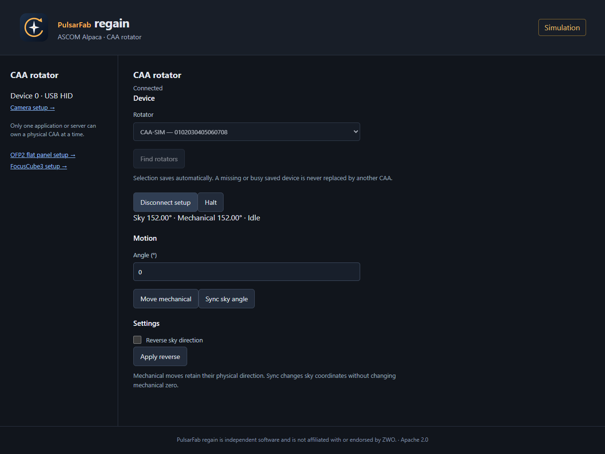
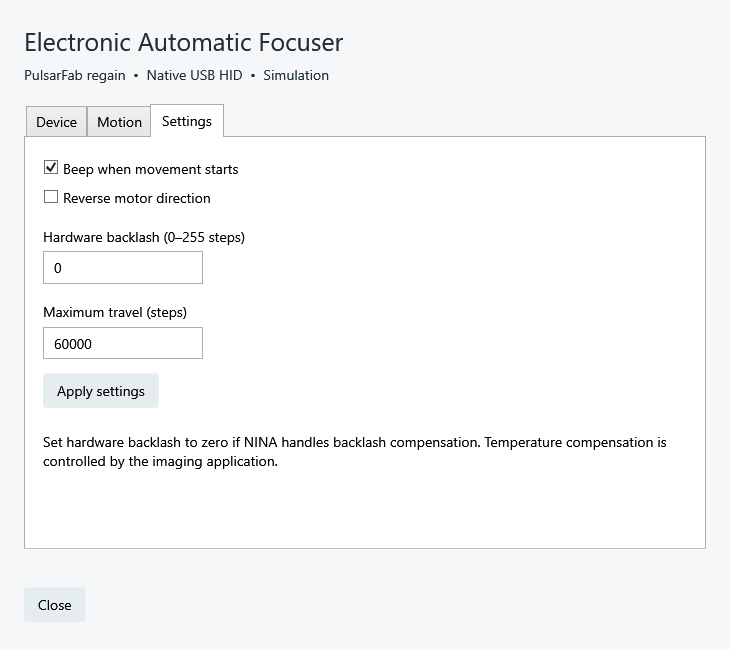

regain documentation
CAA, EFW & EAF
SDK-free ZWO accessory drivers with native NINA, native ASCOM, and Alpaca setup.
All three accessories use the same Rust USB HID worker through each frontend. On Windows, the built-in HID driver is sufficient. Select a serial in setup and disconnect other controllers before connecting.
CAA rotator
Select PulsarFab regain CAA Rotator. Setup includes motion, Halt, logical sky-angle sync, reverse, beep, alias, travel limits, and setting the current mechanical position to zero. Alpaca uses Rotator device 0.
A CAA-M54 with firmware 1.1.1 passed Windows hardware tests, including a 450° forward-and-return move. Linux/macOS HID builds still need hardware testing.
{kind=link}

EFW filter wheel
Select PulsarFab regain EFW Filter Wheel. The Filters tab sets slot names, focus offsets, and unidirectional moves. Motion uses display slots 1–N. NINA retains its per-filter exposure and autofocus settings. Alpaca uses FilterWheel device 0.
Calibrate the wheel
- Connect for setup and open Motion → Calibrate wheel, or choose Calibrate wheel in Alpaca.
- Wait for live progress to finish. Calibration detects slots and ends at slot 1.
- Verify slot selection. Filter names and focus offsets are preserved.
The attached seven-position EFW passed SDK and native calibration in about 49 seconds, followed by full slot sweeps.

EAF focuser
Select PulsarFab regain EAF Focuser. Motion provides absolute step moves and Halt. Settings control beep, reverse, hardware backlash, and maximum travel. Check mechanical clearance and use zero hardware backlash if NINA manages it. Temperature compensation remains the host application’s responsibility. Alpaca uses Focuser device 0.
{kind=link}

For commands, USB traces, tested behavior, and limitations, see the EFW/EAF playbook and CAA frontend guide.